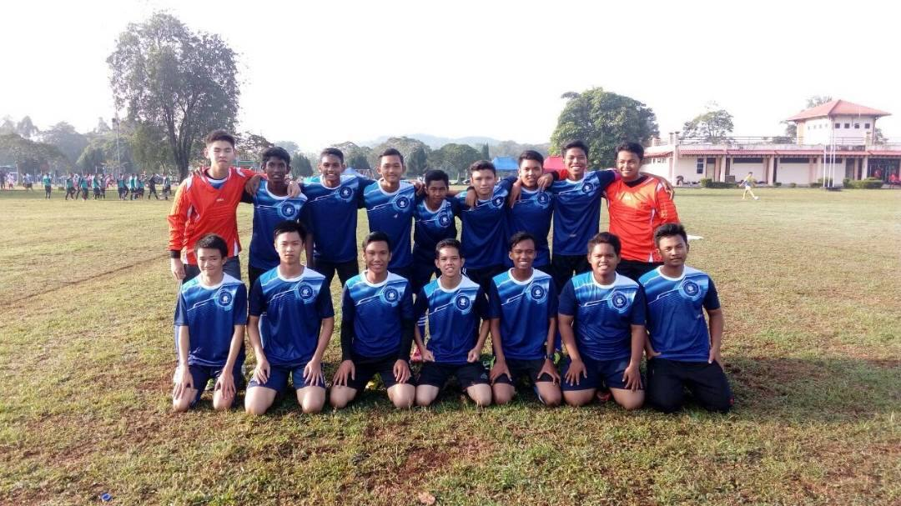

My Experience
Here I share my experience of competing in competition while representing my school. I had so much joy representing my favourite school and won various tournaments. With so many critical things happening in my life, my experience was really rewarding.

After repeated efforts, my school ultimately won a 7-a-side rimau rugby championship. Although we couldn't afford to be winners, third place was enough to make us proud of the school's name.
My next experience was attending a school-sponsored camp. One advantage is that pupils can develop self-discipline. This is due to the fact that discipline is the most crucial core in the scouting movement. As a result, to get valuable experience and information, pupils should participate in such of this activities

From the age of 14 to 17, I played on the high school football team. Many experiences come and go when it comes to wanting to be proud of the school while representing the school. To win a high school football competition, teammates put forth a lot of work. It was a positive learning experience for me.